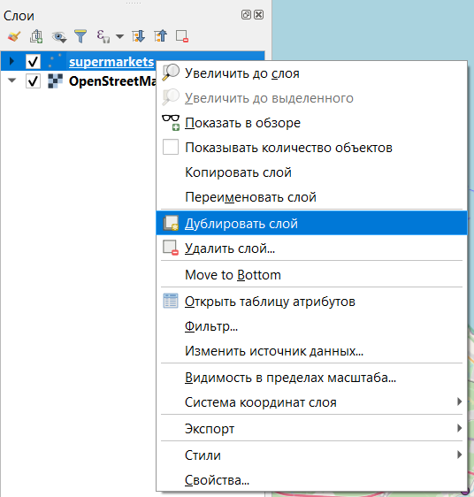

6 Загрузка данных с OpenStreetMap
OpenStreetMap (OSM) — проект, который создаёт и предоставляет свободные географические данные, дает возможность создавать карты любому пользователю. Каждый желающий может поучаствовать в проекте (загружать свои треки на сервер, дорисовывать общедоступную карту по спутниковым снимкам Bing, MapBox, DigitalGlobe (весь мир), IRS (запад России), SPOT4 (восток России) и SPOT (Белоруссия) от Космоснимки.ру, ASTER (Россия), OrbView-3 и другими) и использовать эти карты совершенно свободно, и бесплатно в отличие от многих других карт, даже бесплатных, свободное использование которых ограничено.
Карты этого проекта очень широко используются как в некоммерческих целях, например, для исследовательских проектов, так и для коммерческих проектов, например, создания навигационных приложений.
Вот очень любопытный прецедент использования OSM в нашей стране.
6.1 Сервис overpass-turbo
Один из самых простых способов скачивания пространственных данных с OSM - это использование сервиса http://overpass-turbo.eu/.
Есть еще вот такой сервис русскоязычный, но там довольно много ограничений в бесплатной версии.
Подробная информация о сервисе https://wiki.openstreetmap.org/wiki/Overpass_turbo
Для создания запросов используется собственный язык запросов Overpass QL (Overpass Query Language)23.
Есть несколько различных типов формулировок Overpass QL . Они сгруппированы в:
Параметры, которые являются необязательными глобальными переменными, устанавливаются в первом операторе запроса. Примерами настроек являются тайм-аут сервера для сервера Overpass API и формат вывода запроса Overpass QL.
Операторы блока : операторы блока группируют операторы Overpass QL вместе.
Автономные запросы: это самостоятельные полные утверждения. Они могут выполнять такие функции, как запрос к серверу Overpass API для создания набора; манипулирование содержимым существующего набора; или отправка конечных результатов запроса в место вывода. Автономные запросы сами по себе состоят из более мелких языковых компонентов Overpass QL, таких как оценщики, фильтры и операторы.
На самом деле, чтобы составить запрос вам не обязательно знать все тонкости языка запросов. Вот основные моменты, которые необходимы для запроса:
- то, как объекты обозначаются в OSM - ключ и его значение;
- тип объектов (не обязательно, а только, если вы хотите выгружать конкретный тип объектов - точки, линии или полигоны);
- охват территории поиска - bounding box (по умолчанию задается по видимой части карты в правой половине окна, но можно задать непосредственно в запросе или выбрать вручную на карте).
Подробная информация о том, какие объекты как обозначаются в OpenStreetMap. На этой странице можно искать нужный вам тип объектов, чтобы составить запрос.
В левой части окна будет отображаться выполняемый запрос, а в правой результаты этого запроса. По умолчанию поиск осуществляется в той области, которая отображается в правой части окна (это можно скорректировать более сложными запросами, см. справку о сервисе).

Для составления запросов используется помощник. Обратите внимание, что в нем сразу можно использовать логические операторы.

Для примера можно найти и загрузить данные по многоквартирным жилым домам (building=apartments) и основным магистральным улицам (highway=primary or highway=secondary or highway=tertiary, то есть центральные магистрали, основные магистрали районов и основные микрорайонные или межмикрорайонные транзитные улицы) в Санкт-Петербурге.
Первый запрос по поиску жилых домов выглядит примерно так. Обратите внимание, что я убрала пункт node, чтобы у нас не производился поиск точечных объектов.

В результате запроса получим объекты на карте.
По умолчанию поиск объектов производится внутри видимой области карты в правой части окна, но с помощью кнопок управления, расположенных в этой части окна вы можете выбрать, например, прямоугольную область поиска.

В нижнем правом углу окна видно, сколько объектов какого типа было найдено, а сколько отображено.
Эспортируем результаты себе на компьютер для дальнейшей работы с ними в QGIS. Для этого нужно нажать кнопку Экспорт, после чего появится диалоговое окно экспорта.

Данные можно сохранить себе в формате geojson, о котором говорилось в предыдущем разделе 4, кроме этого формата данные также можно скачать в GPX, KML, в виде сырых данных, а также в виде данных для редактирования OSM.
Предварителльно проверим свой файл в сервисе geojson.io.
Здесь достаточно будет просто перетащить ваш файл в правую часть окна. Если с файлом все в порядке и геометрия валидна, то на карте должны отобразиться объекты, а в правой части будет структура geojson файла.

Откроем полученные данные в QGIS.
Добавление слоя осуществляется через строку меню Слой — Добавить слой — Добавить векторный слой.

Далее в диалоговом окне нужно указать путь к файлу.

На самом деле не обязательно пользоваться строкой меню и ее пунктом Слой, все то же самое можно делать через окно Браузер в левой части интерфейса. Это скорее вопрос привычки.
Но нужно помнить, что процесс открытия через строку меню более контролируемый.
Если вы открыли новый проект, то в нем нужно выполнить перепроецирование на лету и добавить подложку. Как это сделать было описано в ??.
В результате должно получиться что-то подобное.


В таблицах атрибутов будет содержаться информация об объектах, которая внесена в OSM.
Открыть таблицу атрибутов слоя можно из контекстного меню, которое открывается правым кликом на название слоя.

Атрибуты - это те характеристики объектов, которые не являются пространственными.
Таблица атрибутов открывается в отдельном окне.

При необходимости мы можем добавлять и удалять отдельные поля, а также осуществлять операции между полями (об этом чуть подробнее будет на следующих занятиях).
Для добавления и удаления полей нужно включить режим редактирования таблицы в ее панели инструментов (значок  ). После этого в панели инструментов таблицы станут активными кнопки добавления и удаления полей
). После этого в панели инструментов таблицы станут активными кнопки добавления и удаления полей  .
.
При удалении полей следует просто выбрать поля, которые вы собираетесь удалить в перечне (можно выделять сразу несколько названий полей, используя кнопки Shift и CTRL).
При добавлении нового поля обязательно нужно задать его имя и тип данных, которые будут в нем храниться.
6.2 Модуль QuickOSM
Кроме непосредственного использования сервиса можно скачивать данные OSM напрямую из QGIS с помощью модуля QuickOSM.
Как устанавливать модули уже было рассказано ранее в 5.2.1.

После установки модуля на панели инструментов появятся два значка  , левый из которых запускает окно поиска и загрузки данных из OSM, а правый позволяет удаленно подключаться к редактированию OSM через редактор JOSM24.
, левый из которых запускает окно поиска и загрузки данных из OSM, а правый позволяет удаленно подключаться к редактированию OSM через редактор JOSM24.
Окно модуля по умолчанию открывается на вкладке Быстрый запрос.

Кнопка Помощью с ключами/значениями открывает страницу с документацией модуля https://docs.3liz.org/QuickOSM/
На второй строке находятся строка выбора пресетов (Preset) - готовый запросов по поиску объектов, поэтому если вы не очень уверены в том, как какие-либо объекты обозначаются, но знаете, какие вам нужны, можно попробовать найти уже готовый запрос здесь.
Сразу под этой строкой находится таблица, где вы можете выбирать конкретные ключи и их значения.
Запрос может включать в себя сразу несколько пар ключ/значение, но в этом случае части запроса должны быть связаны одним из логических операторов AND или OR.
Главное отличие в применении этих операторов состоит в том, что при выборе AND поиск объектов будет осуществляться с учетом того, что все части запроса должны выполняться одновременно.
При использовании оператора OR будет производится поиск объектов, удовлетворяющих хотя бы одному условию из заданных.
Сразу под таблицей необходимо задать область поиска:

В - поиск в заданном населенном пункте;
Вокруг - поиск в заданном радиусе вокруг населенного пункта;
Покрывать холст - поиск в пределах видимой в основном окне программы части карты;
Покрывать слой - поиск в пределах охвата конкретного слоя (необходимо выбрать нужный слой);
Не пространственные - не заданная конкретная область, поэтому поиск будет производиться во всех данных OSM вне зависимости от местоположения.
Свой запрос вы можете сохранить в виде пресета (Save query in a new preset), просмотреть его (Показать запрос) и Выполнить запрос.
При нажатии на кнопку Показать запрос у вас откроется вкладка Запрос, где текст вашего запроса будет показан на языке запросов Overpass аналогично тому, как было рассмотрено выше в 6.1.

При желании, запрос можно писать прямо здесь.
В пункте Query history на вкладке Быстрый запрос у вас будут отображаться уже сделанные вами запросы.
В дополнительных настройках быстрого запроса можно указать:

тип объекта для поиска;
время ожидания при выполнении запроса;
путь к папке для сохранения результатов запроса и формат сохранения данных, а также префикс файла для более простой идентификации.
!NB по умолчанию результаты запроса сохраняются во временные слои, обозначенные значком
Эти слои существуют только во время текущего сеанса работы, так что если вы планируете работать с ними далее, то их необходимо сохранить. Сделать это можно, кликнув правой кнопкой мыши на название слоя и выбрав пункт Сохранить на диск или Экспорт — Сохранить объекты как…


Также обратите внимание, что по одному и тому же запросу могут возвращаться объекты с разными типами геометрии, причем каждый из этих типов сохраняется в отдельный слой.
На вкладке Map preset вы увидите существующий по умолчанию в модуле пресет Urban, а также свои сохраненные в виде пресетов запросы.

Вкладка OSM файл позволяет загружать сырые данные из OSM для их редактирования.
В Параметрах вы можете выбрать конкретный сервер Overpass для соединения и сервер Nominatim25.

Если запросы осуществляются слишком медленно или не осуществляются вообще, выбор другого сервера может помочь решить эту проблему.
6.3 Дополнительно
Кроме непосредственного использования Overpass можно воспользоваться OSM-GPT - сервисом на основе ChatGPT, который позволяет делать запросы с использованием естественного языка.
https://osm-gpt.rohitgautam.com.np/
При желании более подробно ознакомиться с логикой построения запросов и языком запросов, вы можете воспользоваться интерактивным учебником https://osmlab.github.io/learnoverpass//en/
Или взять уже готовые запросы из коллекции запросов https://osm-queries.ldodds.com/
Overpass API/Overpass QL https://wiki.openstreetmap.org/wiki/Overpass_API/Overpass_QL↩︎
В данном случае этот сервис нужен для осуществления геокодирования, то есть поиска положения населенного пункта по его названию↩︎